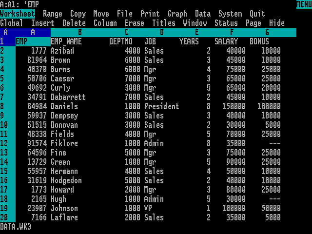
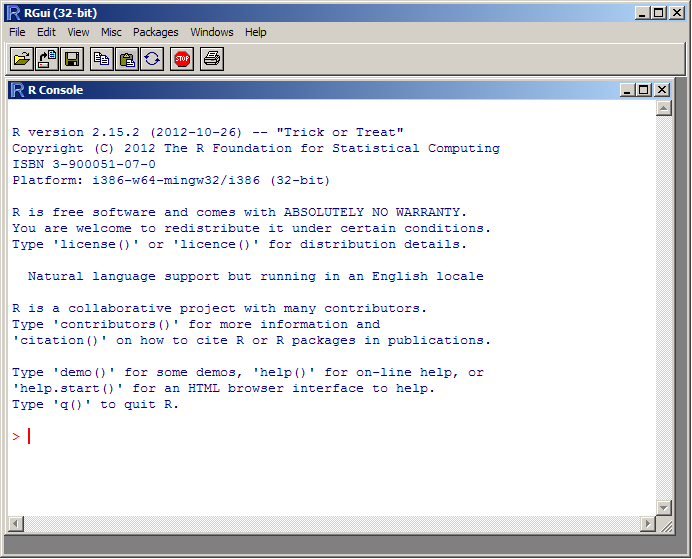
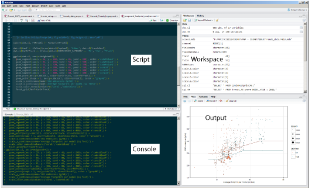

A tutorial by Matt Frost,
Charlottesville, Virginia
Usually we're referring to the conversion of recorded data (information) into knowledge through transformation and presentation.
Get the idea?
Via nextnewdeal.net
...there were some way to tell computers to repeat a set of tasks.
Some way to execute a "program" of instructions...
Some sort of "language" in which those instructions might be given...
"I'm not a programmer!"
You aren't an accountant, either, but you seem to use a lot of spreadsheets.
"R is an integrated suite of software facilities for data manipulation, calculation and graphical display."
The finest command-line interface 1992 has to offer.
RStudio improves the R experience by combining the script editor, data browser, console, and other features into an Integrated Development Environment (IDE)
Integrated source code and output
# Using R for Analysis
## Get R Ready for Analysis
- `require()` loads an external package to offer tools not included in R's core functionality.
- `ggplot2` is a package for graphing data that will exceed your wildest imagination
- `lubridate` provides tools for making working with dates slightly less hateful
- `plyr` allows extremely sophisticated grouping and summarizing
```{r loadpackages}
# install.packages(c('ggplot2','lubridate','plyr'))
require(ggplot2)
require(lubridate)
require(plyr)
```
Then open tutorial.Rmd
The script needs to know where you have stored the source code and data tables. On my setup, it's in a folder called C:\r_tutorial, but yours might differ.
BIG thanks to Hadley Wickham for the "typing vs clicking" hook, and for the world's greatest R packages.
mwfrost@gmail.com